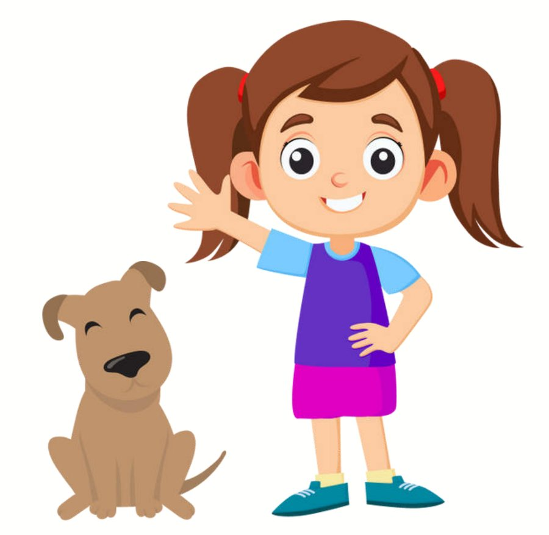
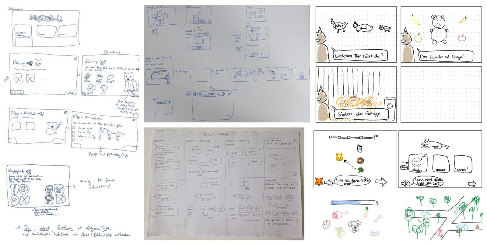
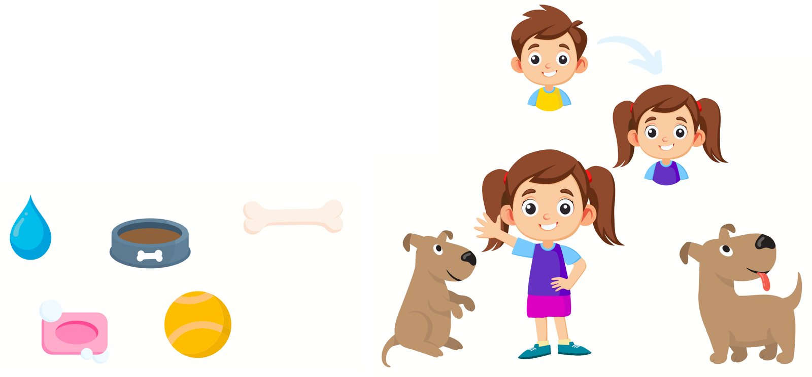
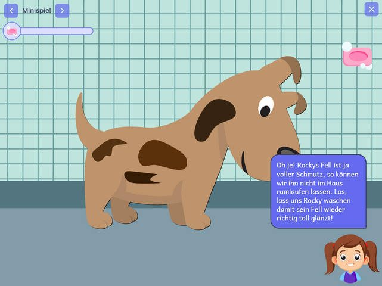
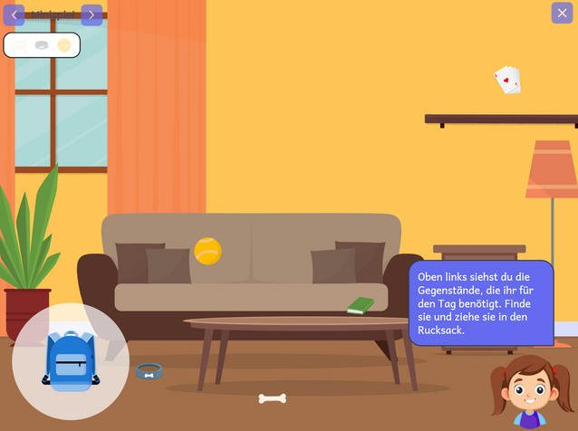
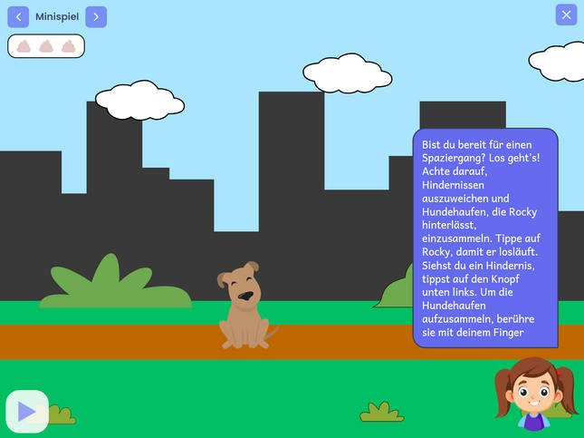
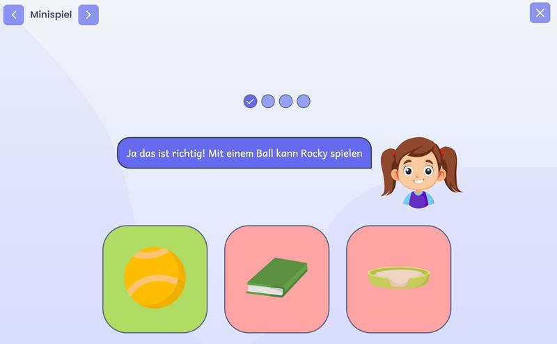

Schule 4.0
2023Eine Lern-App, mit der Erstklässler spielerisch lernen, wie man sich gut um ein Haustier kümmert.

Spielerisch mehr über Haustiere lernen
Eine digitale Lernanwendung, mit der Lehrkräfte Kindern der ersten Klasse interaktiv beibringen, verantwortungsvoll mit Haustieren umzugehen. Durch die App führt ein Mädchen, das gemeinsam mit den Kindern den Hund Rocky versorgt.
- In Kooperation mit
- Pädagogische Hochschule Weingarten
Teichwiesenschule Korntal
- Rolle
- Design: UX/UI, Grafiken, Screens
- Team
- Interdisziplinäres Projektteam
- Kontext
- Interdisziplinäres Projekt, HdM Stuttgart
- Zielgruppe
- Erstklässler und Lehrkräfte
Nutzerzentriert, vom ersten Gespräch bis zum Test
Das Projekt folgte dem User-Centered-Design-Prozess. Weil die Nutzer sechs Jahre alt sind, musste jede Entscheidung zwei Gruppen gerecht werden: den Kindern, die noch kaum lesen können, und den Lehrkräften, die die App im Unterricht einsetzen.
Research
Bedürfnisse von Kindern und Lehrkräften
Konzept
Lernziele und Ablauf der Minispiele
Design
UX/UI, Grafiken und Screens
Entwicklung
Umsetzung als interaktive App
Test
Erprobung mit der Zielgruppe
Von der Skizze zum Ablauf
Bevor ein einziger Screen entstand, habe ich die Minispiele und die Navigation auf Papier durchgespielt: welche Aufgabe kommt wann, wie erkennt ein Kind ohne Lesen, was zu tun ist, und wo die Lehrkraft eingreifen kann.

Ein Stil, den Sechsjährige sofort verstehen
Für die Figuren und Gegenstände habe ich einen eigenen, einheitlichen Grafikstil festgelegt. Die Figuren wurden dabei bewusst weiterentwickelt, bis sie freundlich, klar und für Kinder sofort lesbar waren.
- 2D-Grafiken mit zurückhaltender Schattierung
- Vereinfachte Formen und Farben
- Kindgerechter, reduzierter Zeichenstil

Minispiele rund um Rocky
Die fertigen Screens verbinden die Grafiken zu kurzen Minispielen. Kurze Sprechblasen der Hauptfigur erklären jede Aufgabe, große Bildflächen ersetzen Text, und ein Fortschrittsbalken zeigt, wie weit man schon ist.



